Welcome to Beloved Church Kenya
Beloved Church Kenya is part of the beloved church in Seol South Korea founded by Senior Pastor Byun and headed in Africa by Co-Snr Pst. Jin Sung. Our kenya headquater is in Malaba Kenya,Kestern.
We share the greatest call of God as revealed to His servant the founder to raise Biblical Churches in Kenya, to influence other Churches around us by this pure doctrine of Christ and to reach out to millions of souls and win them to Jesus Christ through the 3 fold ministries as done by Jesus Christ;
- Teaching the Bible as it is
- Preaching the gospel of the Kingdom
- Healing all kind of deseases and sicknesses
And Jesus went about all the cities and villages, teaching in their synagogues, and preaching the gospel of the kingdom, and healing every sickness and every disease among the people.
Where Love, Holiness, and Power Meet — join us for worship, Word, and transformation.

Bishop's Message
Beloved, the Lord is calling His church to intimacy and holiness. This is a generation to arise in prayer and power. You are welcome to be part of this divine family where God still moves.
— Bishop Sam Onduru
Church Gallery
Moments of worship, outreach and community life.
 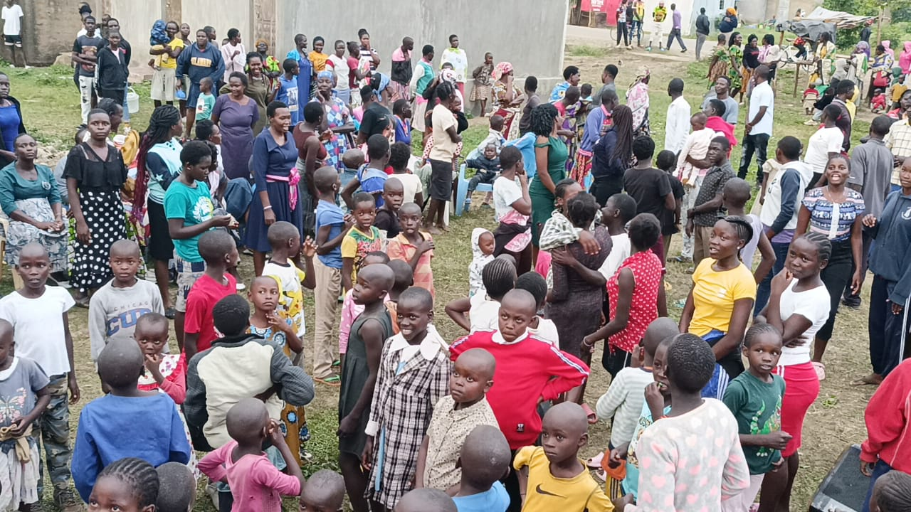
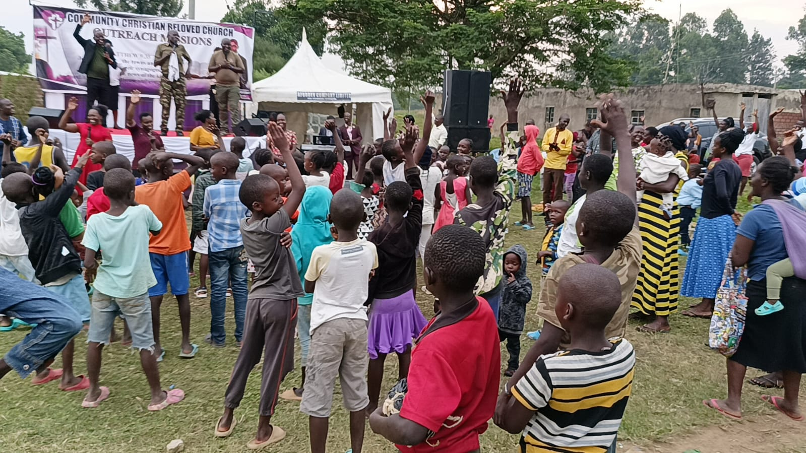
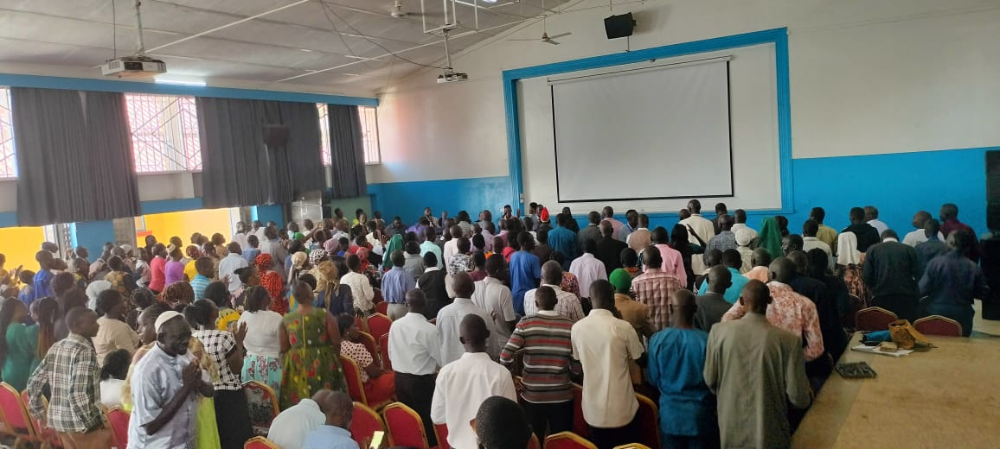
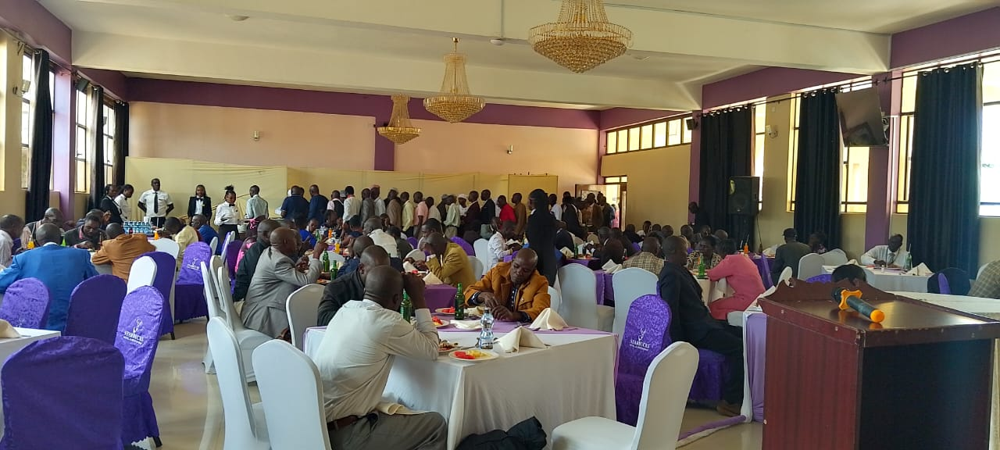
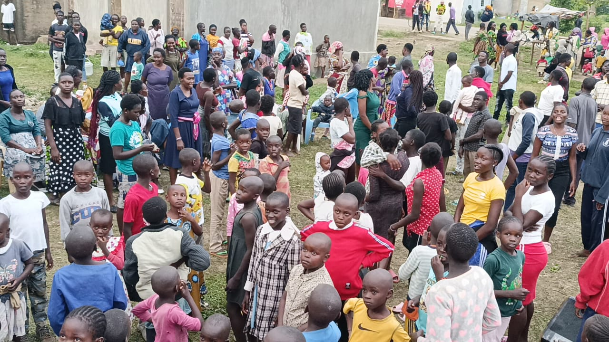
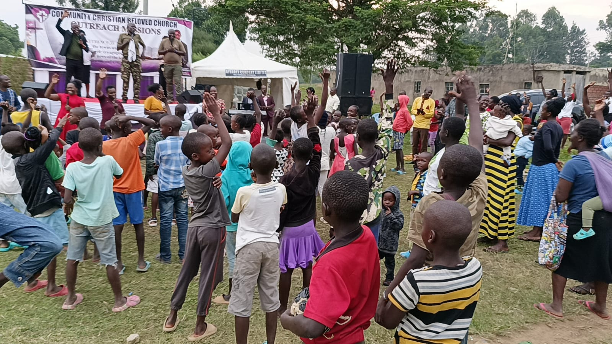
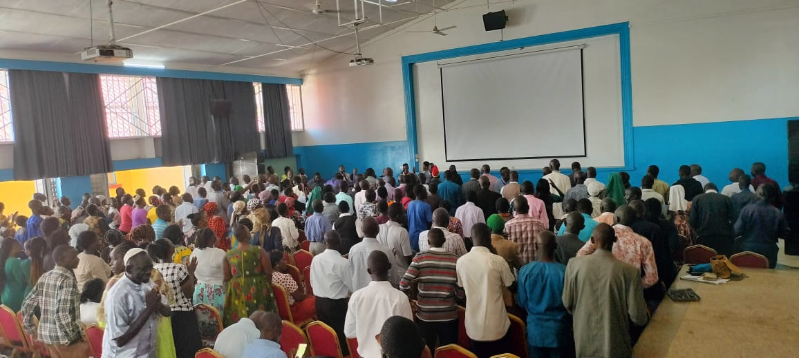
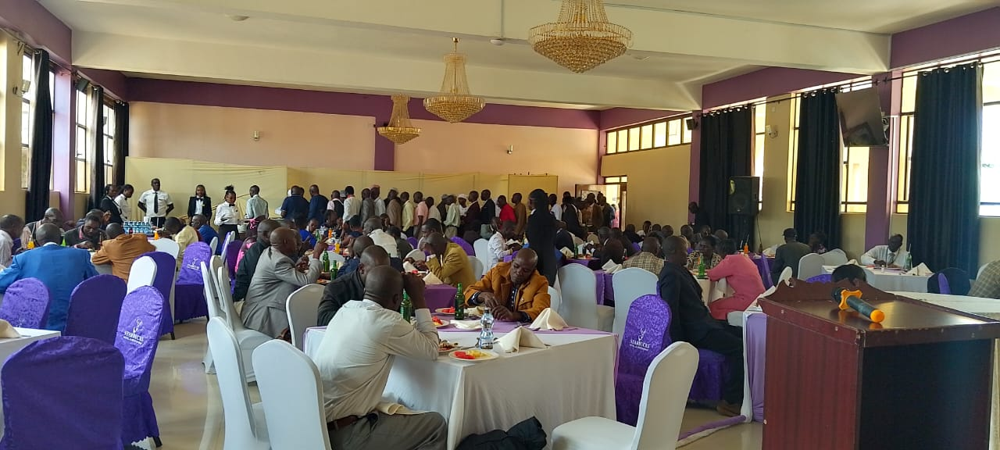

 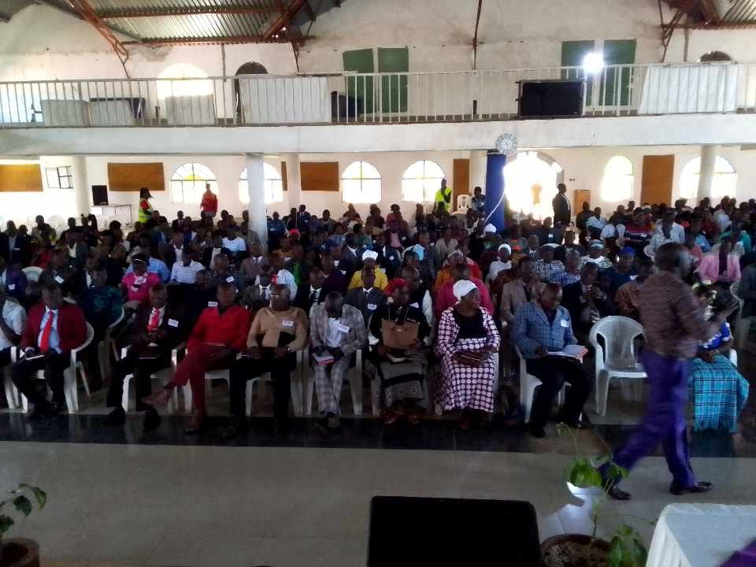
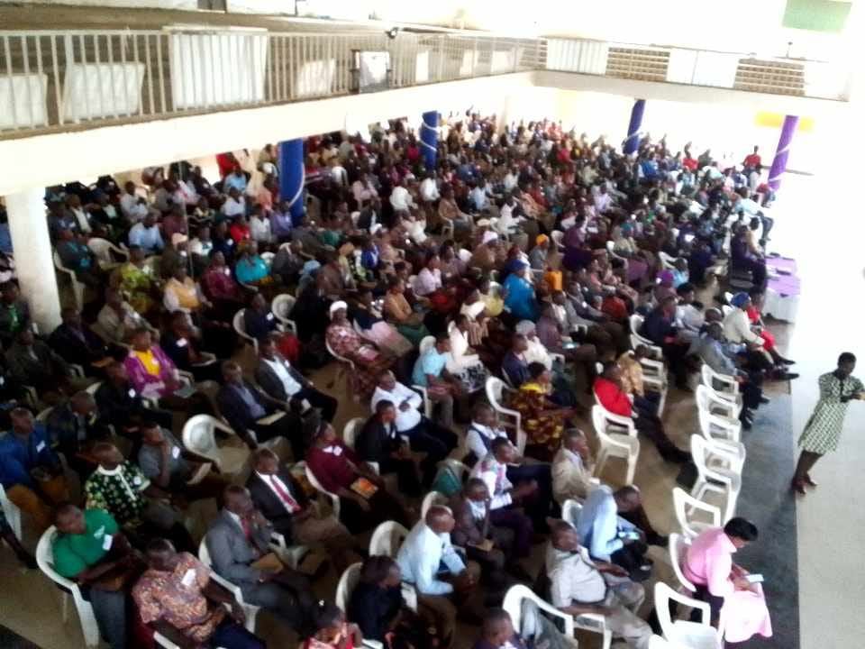
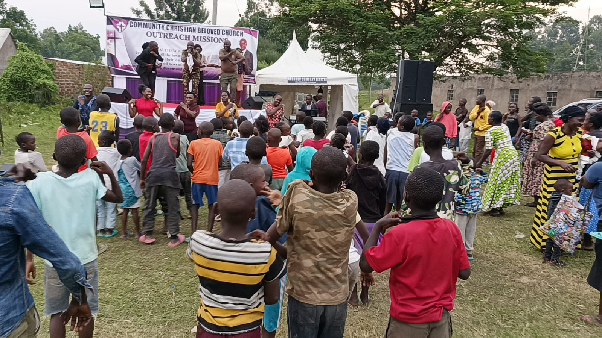
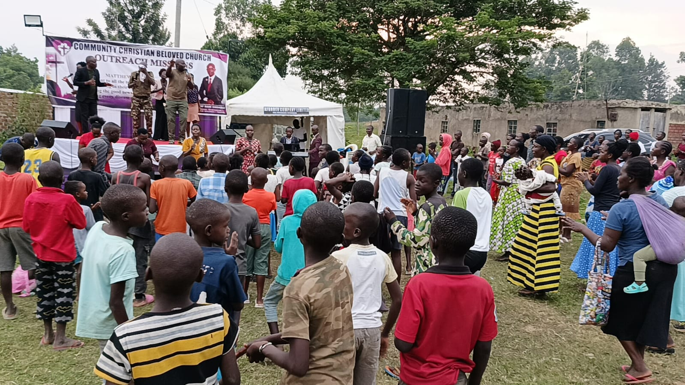
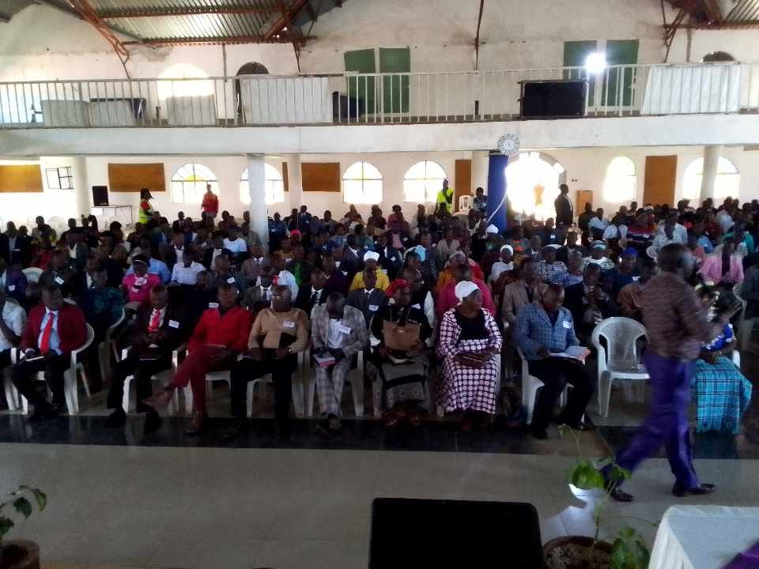
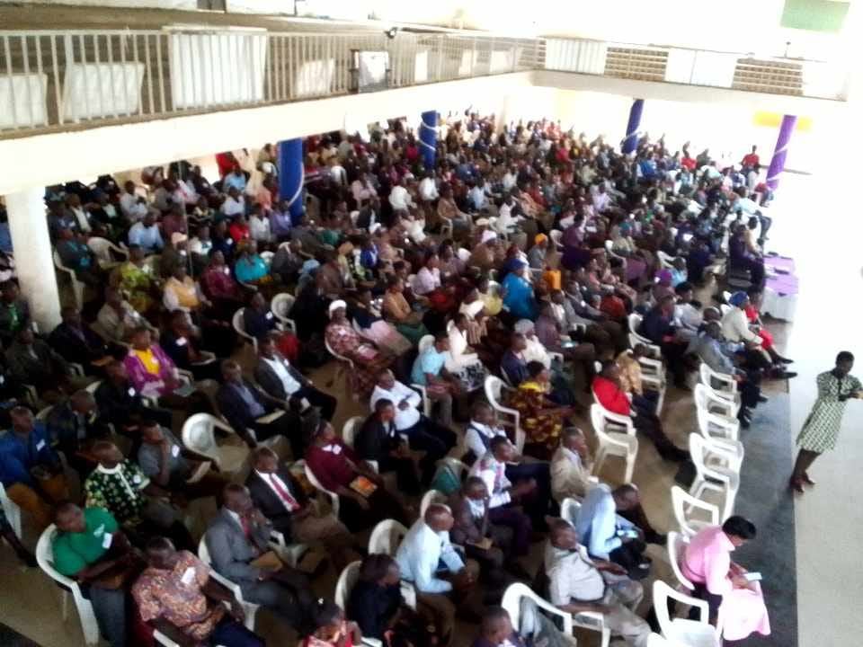
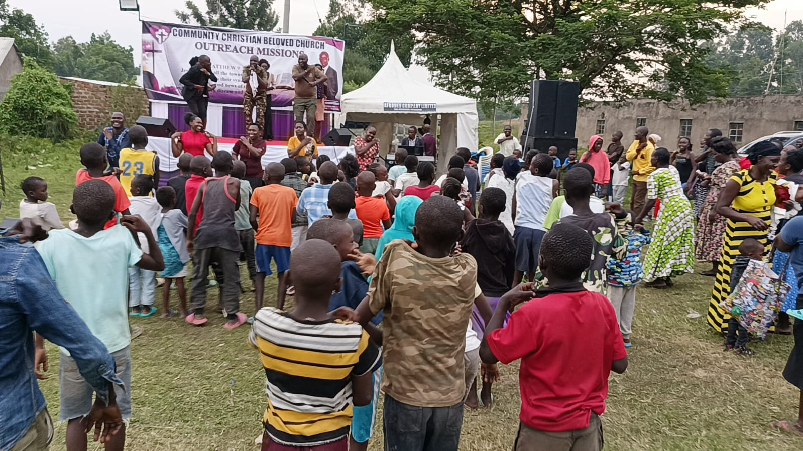
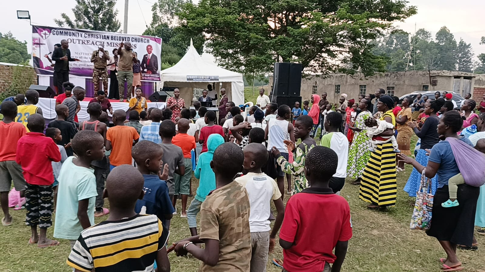
 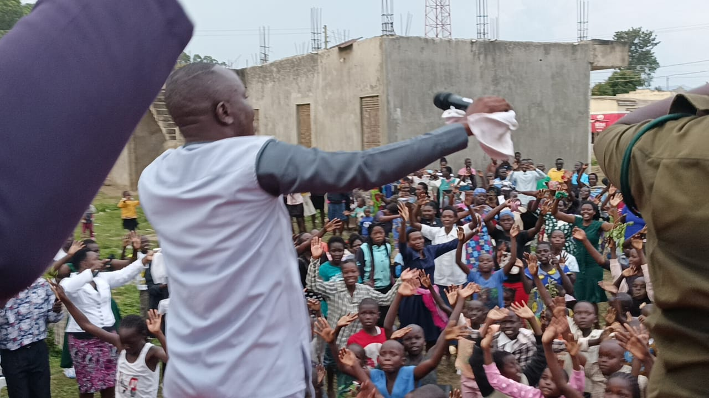
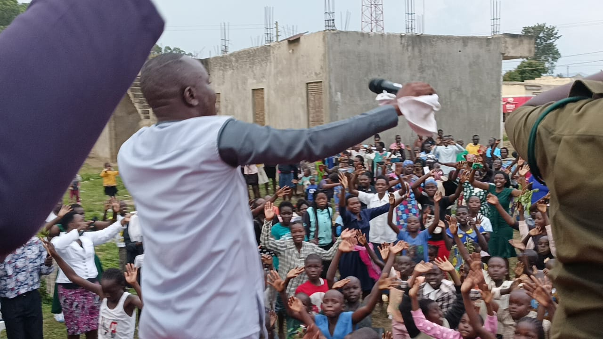